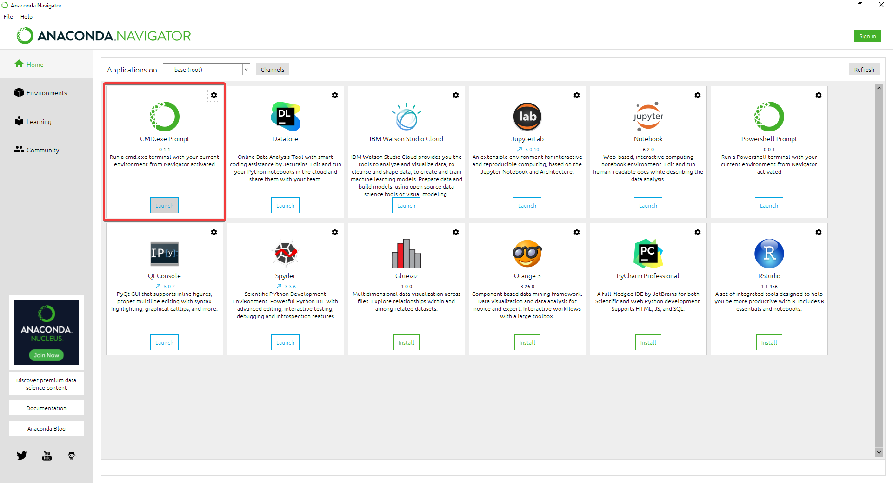
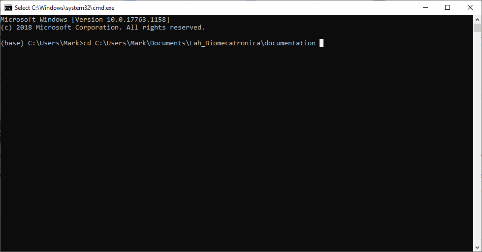
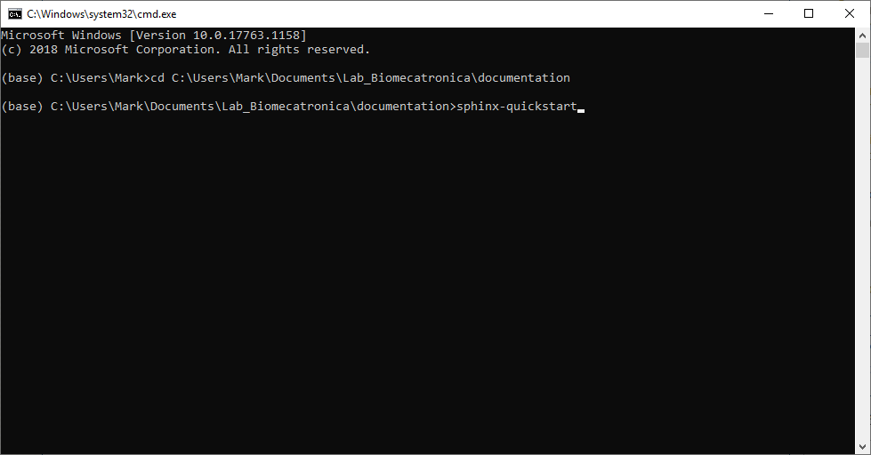
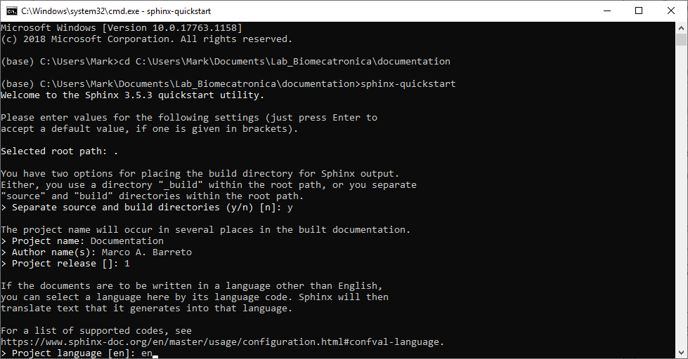

Adding Sphinx to My Project¶
The next thing we want to do is to build Sphinx into our project, so we can compile the project into a set of HTML files to visualize beautiful documentation.
Attention
If you haven’t installed Anaconda and Sphinx you need to do it to follow this guide, check Installing Anaconda on Windows and Installing Sphinx.
Open the CMD.exe terminal using Anaconda Navigator.
Change directory to your project directory in the terminal using
cd, the path may be different for you.cd C:\Users\your_username\Documents\Projects\your_project
Copy and paste the next line of code into the terminal to build Sphinx into your project folder.
sphinx-quickstart
The quick start utility should now show. Follow the process by filling a project name, author, release number and language.
